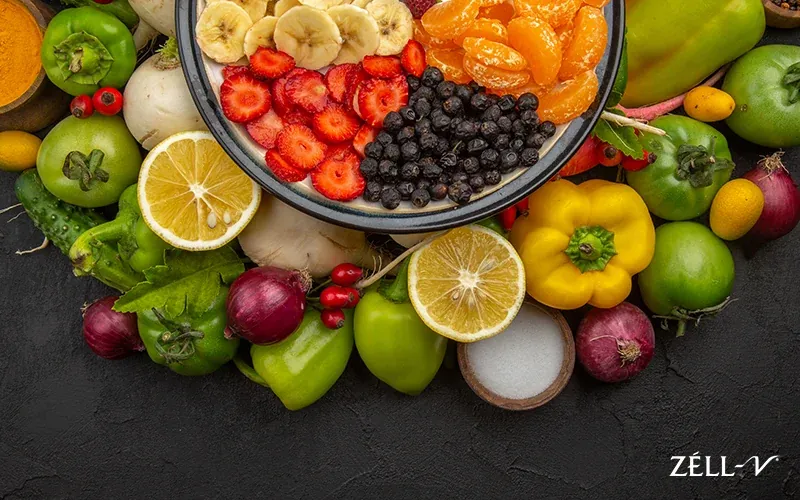
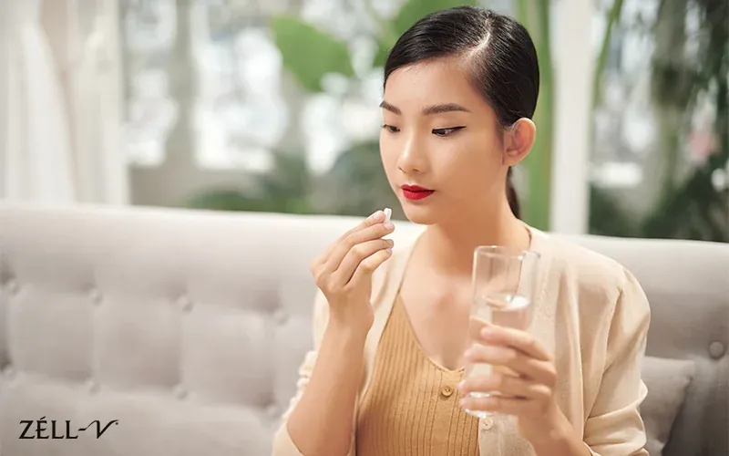

Your skin is just like your heart, liver or kidneys; it is an organ that plays the most important roles within your body. The skin is the initial defence against outside substances, and it creates an innate wall that shields your internal organs.
Healthy, glowing skin is something most people want to achieve; however, achieving this goal cannot rely on just one method alone. When you realise your skin is beginning to attain an aged and unhealthy look, then here are some things you can do to make your skin appear younger and even more attractive, without necessarily having to go out of your way to lavish expensive beauty products or beauty treatments.

1. Enjoy Antioxidant Rich Foods
Your body produces free radicals through metabolism, and free radicals may also enter your body through pollutants, smoking and ultraviolet radiation. Modern lifestyle, including air pollution, processed foods, refined sugars and chronic stress, places an additional burden on the body and induces oxidative stress. Inflammation is another common trigger for skin concerns such as redness, acne, and uneven tone.
Foods rich in antioxidants are often marketed as “superfoods” because they help neutralise free radicals and protect cells from damage, supporting healthy ageing and overall vitality. These protective effects support cardiovascular health, skin health, pigmentation balance, inflammation control and a stronger skin barrier. Over time, antioxidant support is associated with a lower risk of certain chronic diseases, including cancers.
Another way to supplement your cells’ natural defences is to take antioxidant supplements, such as those provided by ZÉLL-V Green, which consists of 100% organic Alphanizomenon Flos Aquae (AFA), a rare and precious blue green algae from Klamath Lake, USA, known for its rich profile of natural nutrients and antioxidants.
One of AFA’s key bioactive compounds is phycocyanin, a naturally occurring pigment recognised for its strong antioxidant and anti-inflammatory properties. Phycocyanin helps brighten the skin by neutralising free radicals that contribute to ageing, dullness and uneven pigmentation. By reducing oxidative stress at the cellular level, phycocyanin fosters healthier skin cells and a more even, radiant complexion.
2. Get The Basic Nutrients Your Cells Need
Healthy skin begins within, and the food you eat has a strong influence on your skin’s appearance and condition. As an instance, dehydration will cause dryness, itchiness, dullness and wrinkled skin because the body is short of water to maintain skin hydration. At the cellular level, your skin, too, needs essential nutrients to support regeneration and repair, which are key to maintaining a clear and healthy complexion.
These important nutrients include vitamin A, beta carotene, vitamin C, and vitamin E, all of which help protect the skin and support its natural renewal process. To make sure your skin looks bright and glowing from the inside out, it is important to stay well hydrated and eat a diversified, balanced diet. However, it is not always possible to obtain all the nutrients the skin requires through daily meals alone. This is where skin brightening supplements can provide additional support.
Beyond antioxidant support, the ZÉLL-V Green is rich in key nutrients, i.e. beta carotene, vitamin C, vitamin E, and a wide range of flavonoids. When incorporated into your daily supplement routine, it helps complement a balanced diet and supports overall skin health, radiance and vitality.

3. Nourish Skin; Repair, Amplify Your Skin With The Correct Nutrients
Although antioxidants and vitamins are beneficial to the overall state of our skin, you should not overlook the nutrients that comprise the building blocks of good skin health. Among them, the most significant compound is collagen.
Collagen has become very popular and has a lot of research on it with regard to its effectiveness in making people have youthful looking skin. Collagen, being the most abundant protein in the human body, gives structure to different body tissues and is the one that helps us uphold the firmness and elasticity of the skin. Through the course of ageing, the collagen level in the body decreases, resulting in sagging and wrinkling of the skin. Collagen is such an important constituent of the skin that there are a variety of skincare supplements to enhance natural collagen generation in the body.
An example of such is ZÉLL-V Platinum Plus sheep placenta, which contains a high concentration of sheep placenta extract, equivalent to 30,000mg of fresh sheep placenta. Rich in natural growth factors and transfer factors, sheep placenta extract helps support skin hydration and triggers collagen production, contributing to healthier, younger looking skin.
They can also support the regeneration processes in the skin with the help of growth factors found in sheep placenta extracts. This aids skin cell turnover, which makes them look fresher and younger. Wishing to safeguard your own skin’s natural properties and preserve them even under the impact of age, you may incorporating ZÉLL-V Platinum Plus Sheep Placenta as part of a balanced diet.
As a leading cellular therapy brand with over 2 decades of experience, ZÉLL-V prides itself on its mission to empower individuals to live a healthy and vibrant life through cellular therapy. Contact us today to learn more about our products and drop us a line with any questions you may have.
This article is for general information only and is not a substitute for professional medical advice. Please consult your doctor before starting any supplement, especially if you are pregnant, nursing, taking medication or have a medical condition.